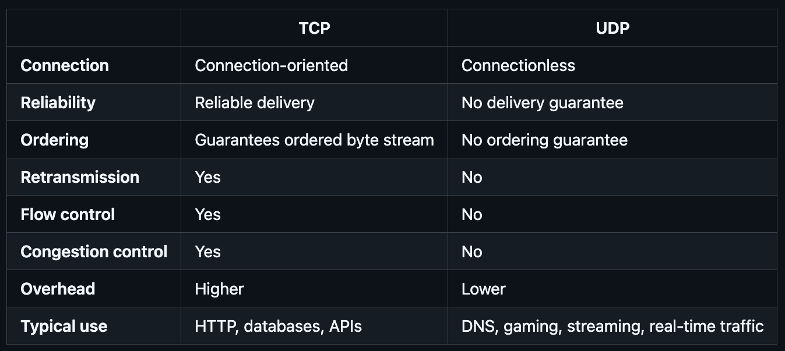
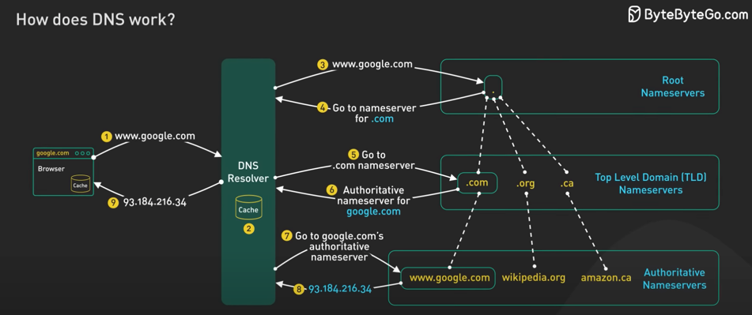
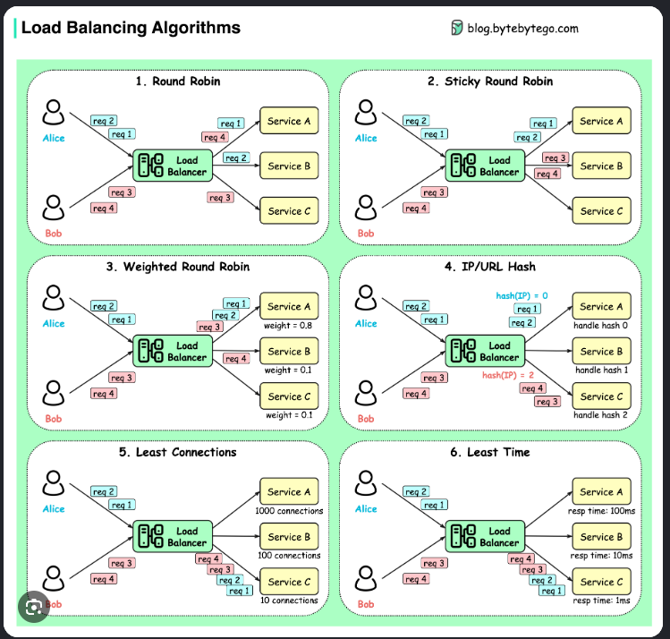
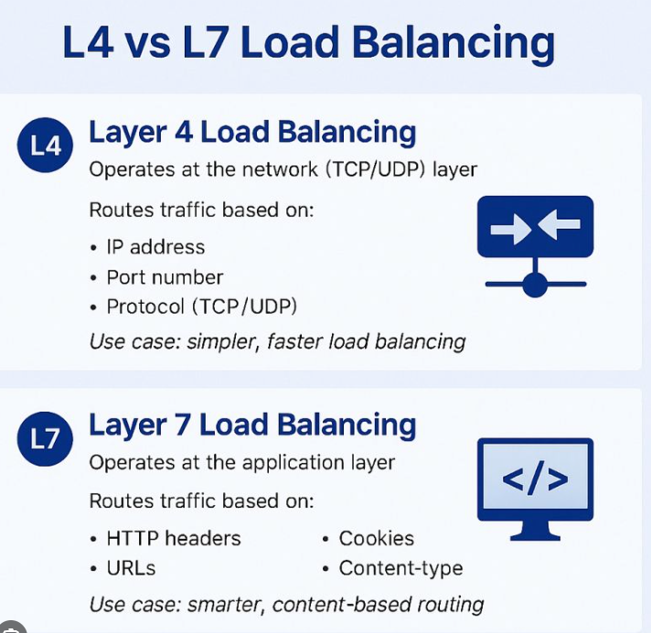
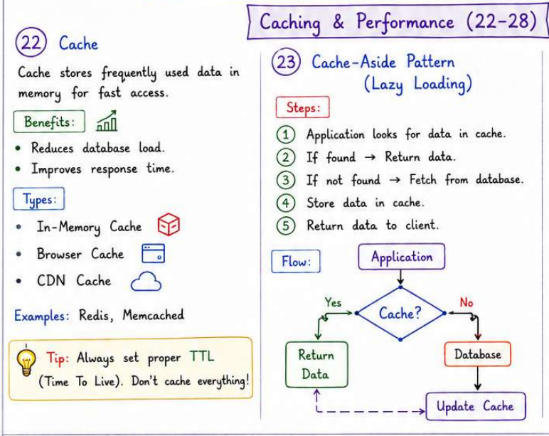
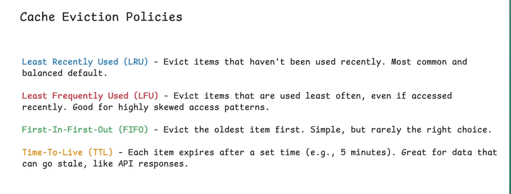
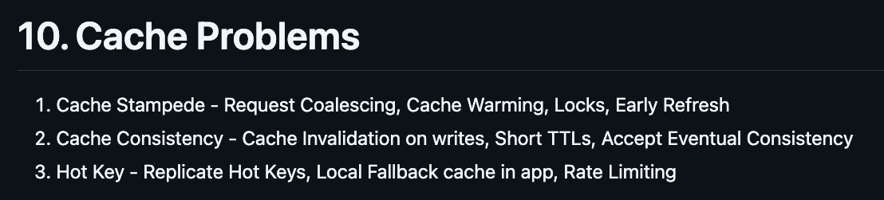
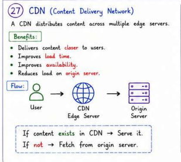
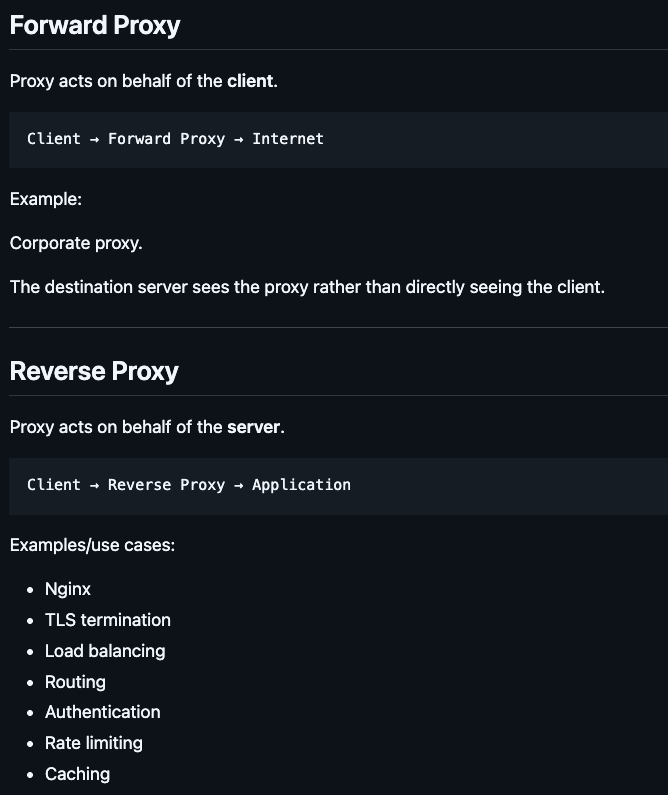
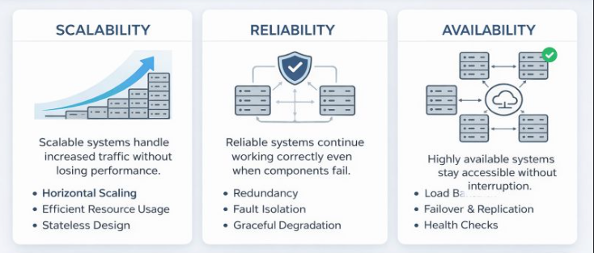

```
| Topic | Key Concepts | Image | Notes | Example |
|---|---|---|---|---|
| IP | An IP address identifies a device/interface on a network so packets can be routed to it. | Public IP, Private IP, IPv4 (32 Bit), IPv6 (128 Bit) | 142.250.195.36 → Public IPv4 address of a server | |
| OSI | Application, Presentation, Session, Transport, Network, Data Link, Physical | Application → HTTP Transport -> TCP/UDP Network → IP | Browser → HTTP → TCP → IP → Network | |
| TCP UDP | TCP is connection-oriented and reliable; UDP is connectionless and faster with no delivery guarantee. |  | TCP → Reliable, ordered delivery; UDP → Low latency, no guarantee | TCP: HTTPS, DB connections; UDP: DNS, video streaming |
| DNS | DNS (Domain Name System) translates human-readable domain names into IP addresses. |  | Domain → IP; hierarchical and distributed; uses caching | google.com → 142.250.195.36 |
| Load Balancer | A load balancer distributes incoming client requests across multiple backend servers Improves Availability and prevents any single server from being overwhelmed * The load balancer should perform health checks and stop routing traffic to unhealthy instances |   | Distribute traffic High availability Failover Horizontal scaling Health checking | |
| Clustering | A cluster is a group of machines working together as a logical system. | |||
| Caching |  |   | Read -> Cache First -> Db On Miss -> Populate Cache Write -> DbFirst -> Invalidate Cache | |
| CDN | Content Delivery Network — geographically distributed servers that cache content closer to users. |  | PushCDN , PullCDN | |
| PROXY | A proxy is an intermediary between a client and another server. |  | ||
| Scalability |  | |||
| Stateless vs Stateful | Stateless - Server doesn't store client context eg. JWT Token , Rest APIs Stateful - Server store client session/context. | |||
| Block vs File vs Object Storage |
Database
| Topic | Notes / Image / Example |
|---|---|
| SQL vs NoSQL | Key Concept: I wouldn't choose between SQL and NoSQL simply based on scale or whether the data is structured. I'd first look at the data model and access patterns, then consistency, transaction and data-integrity requirements, followed by throughput, latency, availability and scalability requirements.   |
| Indexing | An index is an additional data structure maintained by the database to make queries faster. Instead of scanning every row, the database can use the index to locate relevant rows efficiently. B-Tree indexes are commonly used for equality, range, and ordering queries. The trade-off is that indexes consume additional storage and add overhead to inserts, updates, and deletes. For composite indexes, column order matters because of the leftmost-prefix behavior, so I design indexes based on the application's actual query patterns. |
| Replication |  |
| ACID |  |
| PACELC | Partition: Choose Availability or Consistency. Else: Choose Latency or Consistency. |
| Isolation Levels |  |
| Normalization | Organizing data into multiple related tables to reduce data duplication and avoid data anomalies. |
| Denormalization | Denormalization is a database optimization technique where you intentionally add redundant data to a table to speed up read operations and simplify complex queries. |
| Optimistic vs Pessimistic Lock |  |
| Distributed Transactions | A transaction involving multiple independent databases/services. |
| 2PC |  Two-phase commit: A system that voted yes and then loses the coordinator is uncertain. It can't commit, because another system might have voted no. It can't abort either, because the coordinator might have decided to commit. It has to block until the coordinator recovers. |
| 3PC |   |
| SAGA Design Pattern |  |
| SAGA Choreography |  |
| SAGA Orchestrator |  |
| Orchestrator vs Choreography |  |
| Sharding |  |
| Consistent Hashing |    |
| Database Federation |  |
```